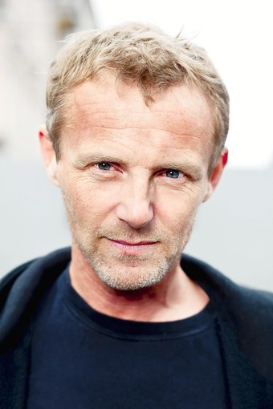

Classici Nordici
(autori e romanzi)
A
B
C
D
F
H
I
J
K
L
M
N
O
R
S
T
U
W
Z
M
Mankell H
 L'AUTORE - Viveva tra la Svezia e il Mozambico, dove a Maputo dirigeva il teatro Avenida. È l’autore della fortunatissima serie del commissario Wallander, pubblicata in molti paesi.
Tra i riconoscimenti internazionali al suo lavoro, ricordiamo The Academy of Swedish Crime Writers’ prize per Faceless Killers (1991); Scandinavian Crime Society prize, The Glass key, per Faceless Killers (1991); The Academy of Swedish Crime Writers’ prize per Sidetracked (1995); the British Crime Writers’ Association prize, the Golden Dagger, per Sidetracked (2001).
L'AUTORE - Viveva tra la Svezia e il Mozambico, dove a Maputo dirigeva il teatro Avenida. È l’autore della fortunatissima serie del commissario Wallander, pubblicata in molti paesi.
Tra i riconoscimenti internazionali al suo lavoro, ricordiamo The Academy of Swedish Crime Writers’ prize per Faceless Killers (1991); Scandinavian Crime Society prize, The Glass key, per Faceless Killers (1991); The Academy of Swedish Crime Writers’ prize per Sidetracked (1995); the British Crime Writers’ Association prize, the Golden Dagger, per Sidetracked (2001).
- Mankell H.
Marklund L.
L'AUTRICE - Giornalista, e autrice della serie poliziesca di Annika Bengtzon, un successo internazionale con 15 milioni di copie vendute in 30 paesi. Con il marito e i tre figli, vive tra la Svezia e la Spagna. Oltre che per i suoi libri e documentari, ha ricevuto diversi riconoscimenti per il suo impegno sociale.
I dodici sospetti è il quarto caso di Annika Bengtzon, reporter della Stampa della sera di Stoccolma.
- Marklund L.
N
Nesbø J.
 L'AUTORE - È nato ad Oslo nel 1960. In gioventù ha giocato a calcio nella Premier League di norvegese. Un brutto infortunio pose fine precocemente alle sue velleità calcistiche facendolo ripiegare su studi di Economia. Ha lavorato come giornalista e broker ed ha raggiunto la fama come frontman di un gruppo pop molto conosciuto in patria (i Di Derre). Durante una turnée in Australia nel 1997 ha scoperto la sua vocazione di scrittore e al ritorno in Norvegia ha pubblicato il suo primo romanzo thriller. Da allora ha pubblicato 14 romanzi di cui 10 facenti parte della saga di Harry Hole e diversi libri per ragazzi. Ha Venduto 27 milioni di copie ed è stato tradotto in 50 lingue.
- Nesbø J.
Nykänem H.
L'AUTORE - É uno scrittore di romanzi polizieschi. È stato un giornalista di cronaca criminale per lungo tempo per il più grande quotidiano finlandese Helsingin Sanomat. Ha vinto il premio finlandese The Clue come miglior thriller nel 1990 e nel 2001. Ha scritto quattro serie (oltre trenta romanzi), tra cui quella del detective Ariel Kafka. I giorni del pentimento (il primo romanzo della serie di Ariel Kafka) è stato pubblicato in tedesco e anche in inglese con il titolo Nights of Awe.
- Nykänem H.
O
Olsen J.A.
 L'AUTORE - Dopo avere svolto i lavori più vari, è oggi scrittore a tempo pieno. Con la serie della Sezione Q guidata da Carl Mørck, ha ottenuto un immenso successo di critica e pubblico, con milioni di copie vendute nel mondo. I suoi libri, premiati da lettori, librai e critici, hanno conseguito importanti riconoscimenti internazionali. Da La donna in gabbia, Battuta di caccia e Il messaggio nella bottiglia sono stati tratti tre film per il grande schermo, mentre l’intera serie sarà oggetto di una trasposizione televisiva prodotta negli Stati Uniti.
L'AUTORE - Dopo avere svolto i lavori più vari, è oggi scrittore a tempo pieno. Con la serie della Sezione Q guidata da Carl Mørck, ha ottenuto un immenso successo di critica e pubblico, con milioni di copie vendute nel mondo. I suoi libri, premiati da lettori, librai e critici, hanno conseguito importanti riconoscimenti internazionali. Da La donna in gabbia, Battuta di caccia e Il messaggio nella bottiglia sono stati tratti tre film per il grande schermo, mentre l’intera serie sarà oggetto di una trasposizione televisiva prodotta negli Stati Uniti.
- Olsen J.A.